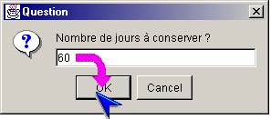

I-SIS Explorer

Guide d'utilisation
|
|
I-SIS Explorer |
|
|
Guide d'utilisation |
||
Lors de l'exécution d'une méthode d'exploitation, ou même d'une méthode d'exploration, il se peut que le I-SIS Explorer affiche une fenêtre vous invitant à saisir des données complémentaires. Cette demande d'information est spécifiée au niveau de la définition de la méthode, dans la table des méthodes de la table concernée.
Une fenêtre de saisie apparaît, affichant un message vous indiquant la nature de la donnée à saisir, ainsi qu'une zone vous permettant d'effectuer cette saisie.
Tant que cette fenêtre est affichée, il ne vous est pas possible d'effectuer la moindre action sur le I-SIS Explorer.
Pour annuler la saisie, et par conséquent l'exécution de la méthode, cliquez sur le bouton "Annuler",
Saisissez la valeur requise, puis cliquez sur le bouton "Valider".

| i |
Information : Le I-SIS Explorer ne contrôle pas la validité des informations saisies. Par conséquent, il est important que cette saisie soit effectuée avec attention. |
Copyright © 2003 BV Associates. Tous droits réservés.